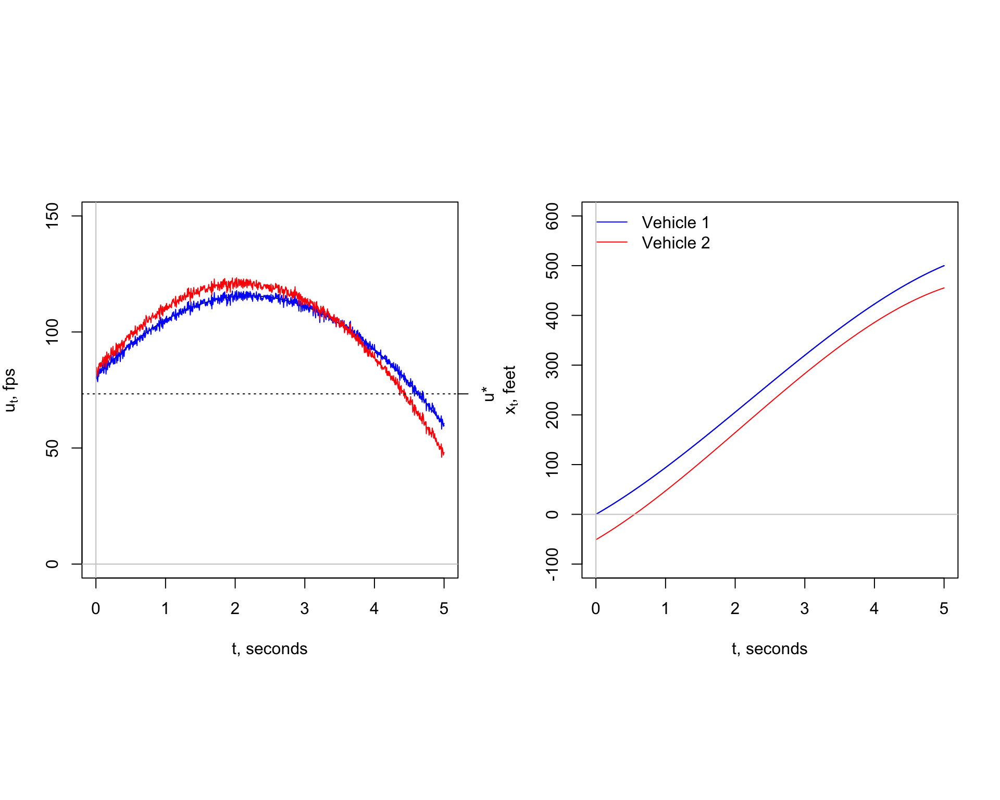
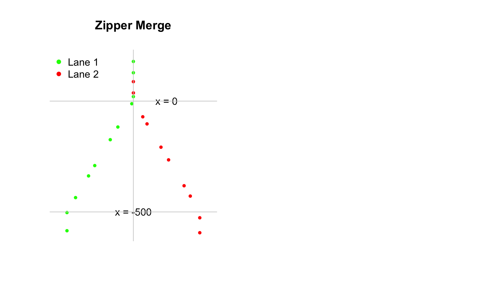

Model Types
We have developed two modeling types to simulate traffic behavior. Each type realisticly simulates conditions found in the field using \(t-x\) trajectories as the principle means of comparison. The models are fundamentally different. One is a deterministic model and the other is a stochastic model. The forecasts from the two models compliment one another. Both satisfy the principal aim of developing the cartools package: To explain highway performance as simply as possible.
| Acceleration Model | Brownian Bridge Model | |
|---|---|---|
| Description | Microscale time-series | Microscale time-series |
| Stochastic | No | Yes |
| Driver Response | Sight lines | Noise |
| Driver Risk Aversion | Safe headway | Safe headway |
| Empirical Data Link | No | Yes |
The major strength of the acceleration model is its ability to explain how a driver will vary his or her vehicle speed over time owing to traffic conditions. It features a \(\ddot{x}(t)\) model, a non-linear, deterministic model.
The major strength of the Brownian bridge model of speed, a stochastic model \(U(k,t)\), is its ability to explain the role of traffic noise and role that traffic density \(k\) plays in forecasting the probability of being in a congested state, \(\pi(k).\) Since the \(U(k,t)\) model is derived from a controlled experiment where \(k\) is a fixed value, traffic flow, a most important measure of highway performance, is simply defined as a parsimonius, stochastic model:
To draw attention to the significance of the model in explaining traffic flow with \(k\), we rewrite as:
where \(U(t) = U(k, u, \sigma, h_{safe}, t)\).
Traffic Breakdown Part 1
What is a traffic breakdown? It is as the transition from a free-flow state to a congested state, \(X = 1 \rightarrow X = 0\). The state space notation is simple enough. The groundwork for explaining traffic breakdown was established in the Car-Following and Traffic Breakdown section of Bottleneck. This approach uses a deterministic model. Explaining traffic breakdown with a stochastic model is most challenging.
A traffic breakdown event is complicated because there is a myriad of ways a breakdown can be initiated. Weaving, merging, aggressive driving, and poor roadway design are often blamed. To simplify the discussion, we assume that traffic breakdown will occur at a bottleneck. A two-lane freeway with uni-directional flow merges into a single lane, the so-called “lane drop” problem. Vehicles are forced to merge. For the present, we concentrate on the first two vehicles that decelerate in traffic described to be highly volatile with high density.
There is uncertainty associated specifying a stochastic speed model. Since the acceleration or deterministic \(u(t)\) model explains breakdown, we will add random effects component to it. We obtain:
where \(W(\Delta t) \sim N(0, \sigma \Delta t)\) and \(\sigma = \sigma(k)\). Thus, \(U(k, a, b, h_{safe}, t)\) is now a stochastic model with an external data link. Does it explain breakdown?
Here is the scenario. The following \(t-u\) and \(t-x\) plots are derived from a simulation using the \(U(k, a, b, h_{safe}, t)\) model. The simulation is limited to an investigation of two vehicles, a lead vehicle and a following vehicle, identified as 1 and 2. It is assumed that the drivers of these vehicles will not change lanes. They car-follow exclusively. There are no drivers outside their driving lane. Thus, conditions that describe a zipper merge do not apply here. Even with these simplifying assumptions, there is quite a bit going on during a traffic breakdown.

Since traffic is highly volatile, the first step is to simulate field conditions. We assume the traffic density is fixed, \(k\) = 50 vpm. Thus \(\bar{u} \pm \hat{\sigma} = 41 \pm 11.6\) mph. Since \(X = 1 \rightarrow X = 0\), the speeds of the two vehicles before and after breakdown must satisfy the constraints \(u(t_{start}) > u^*\) and \(u(t_{end}) \le u^*\) where the time at the start and end of the simulation are \(t_{start}\) = 0 and \(t_{end}\) = 5 seconds. These values were estimated by drawing samples from a simulated data set consisting of one hundred draws from the normal distribution of \(N(\bar{u} = 41, \hat{\sigma}^2 = 11.6^2)\). Four draws were made from the simulated data. They are shown in the following table.
| Start | End | |
|---|---|---|
| Time t | 0 | 5 seconds |
| Vehicle 1: u | 55 mph (81 fps) | 41 mph (60 fps) |
| Vehicle 1: x | 0 feet | 500 feet |
| Vehicle 2: u | 57 mph (83 fps) | 32 mph (47 fps) |
| Vehicle 2: x | -68 feet | 455 feet |
Note that at the start of the simulation, \(t_{start} = 0\), that vehicle 2 is traveling at a speed slightly greater than vehicle 1. At the end of the simulation, \(t_{end}\) = 5 seconds, the opposite is true. The simulation also shows driver 2 is traveling at higher speed than driver 1 for the first three seconds. Driver 2 begins to decelerate around three seconds to maintain a safe headway at \(t_{end}\). Speed volatility explains these findings. Another simulation will be different.
The second step is to estimate model parameters \(a\) and \(b\) for each of the two vehicles. Other assumptions must be must made. The bottleneck is assumed tapper down from two to one lane in 500 feet and the total time for the breakdown is 5 seconds. The drivers are assumed to be risk averse so driver of vehicle 2 maintains a safe headway. All this information is summarized in the table. The \(t-x\) trajectory shows vehicle 2 maintains a safe headway for the entire 5 seconds of the simulation.
The same numerical integration scheme described earlier for determining \(x_t\) trajectories for the ring-road is used here. Like the ring-road, the \(t-x\) trajectories are smooth, suggesting the speeds at times \(t_0\) and \(t_{end}\) are more critical than the speed changes caused by Brownian motion \(W(t)\) ranging over the interval \(t_{start} < t < t_{end}\).
Traffic Breakdown Part 2
The importance of maintaining a safe headway cannot be overemphasized. Without this assumption, the \(t-x\) trajectory of vehicle 2 could cross the trajectory for vehicle 1. The result is a rear-end crash caused by tailgating. This possiblity of a rear-end crash can occur even when there is a safe headway at \(t_{start}\) = 0 and \(t_{end}\) = 5. Let’s see.
The following simulation shows a near-miss caused by tailgating. While the trajectories do not cross, the \(t-x\) trajectories shows a safe headway violation between three and four seconds. Since drivers are assumed to risk averse, it is not unreasable to assume the driver of the following vehicle will decelerate. In other words, not violate the safe headway assumption. To keep the discussion as simple as possible, the safe sightline assumption for times \(0 < t < t_{end}\), discussed in the Bottleneck section, is not imposed here.
Traffic Breakdown Part 3
How is a traffic breakdown initiated in the first place? So far, we have tacitly assumed the lead vehicle decelerates from \(u_{start} > u^*\) and \(u_{end} < u^*\). Now we tackle a most challenging question. Instead of assuming to watch vehicles pass us from the road side, we will position ourselves overhead by analyzing photographs taken from a helicopter or drone flying overhead.

Here, the following graph shows two lanes of traffic merging into one lane. There is no traffic breakdown in this simulation. No queue forms. All drivers maintain free-flow speeds, \(u > u^*\). As above, we simulate speed using the \(U(k, a, b, h_{safe}, t)\) model. To maintain a \(X = 0\) state, all drivers of following vehicles keep a safe headway. This result is most vividly seen downstream where \(x > 0\) where the vehicles travel in one lane.
Since is controversy associated with the proper positioning of roadside equipment, it is interesting to note the following:
because \(k\) = 50 vpm is a constant and \(\bar{u}\) is the same value both downstream and upstream of \(x = 0\). Thus, \(Q = k * \bar{u}\) where \(k = \frac{n}{l}\) and \(n\) is the total vehicle count obtained from the photo. A roadside collection of data taken any position on the photo downstream or upstream of \(x = 0\) gives the same result. We look at the controversy again after we answer the question: How is a traffic breakdown initiated in the first place?
Package Summary
A quick read of the Home Analytical Tools Section may have given the impression that the goal to create the cartools package, a collection of R computer algorithms, will be overwhelming difficult to understand and implement. Words, like complex, dynamics, theory, parsimonious, stochastic and model integration can be daunting. No question that designing and operating a transportation system are difficult problems. Hopefully, by disecting the problem into manageable pieces and synthesizing the results from the individual pieces brings clarity to the process. The ultimate aim of using cartools package tools is to improve our chances of mitigating congestion and improving performance using the simple mathematical and graphical tools.
Lessons Learned
What have we learned about traffic performance using the cartools package? The most notable lesson learned is:
The potential of the cartools package as a learning tool has been demonstrated. Hopefully, this platform can be adapted and expanded to help users identify the root cause or causes for other congestion problems.
My next task is add HTML widgets and animation to the package. Adding these features will allow the user to simply conduct sensitivity analyses on-line. For example, the effects of speed and density on ring-road performance can be explored. Sliders for \(u\), \(\sigma\) and \(k\) will be provided so a user change them at will. The cartools package will instantaneously produce a histogram of headways as illustrated above.
This package is open to the public, https://github.com/PJOssenbruggen/Basic. In other words, I am inviting people to share their experiences with the package with me. See https://guides.github.com/activities/forking/.
GitHub promotes this activity. See https://github.com/explore.